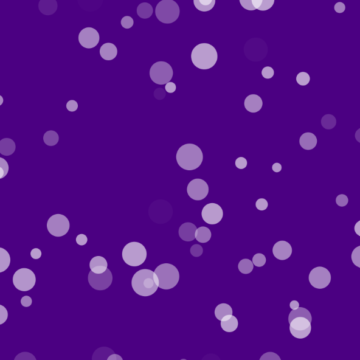

En este primer sketch te presento un código que crea un lienzo y permite agregar estrellas haciendo clic en él.
Cada estrella es un "Objeto" y se dibuja como una estrella de cinco puntas en el lienzo.
La posición y tamaño de cada estrella son aleatorios
Funciones

En este segundo sketch te presento un código que crea un sistema de partículas donde cada partícula se mueve de manera aleatoria influenciada por el ruido de Perlin.
El programa inicializa un lienzo, crea un conjunto de partículas, las actualiza y las muestra en el lienzo en cada iteración.
Funciones
